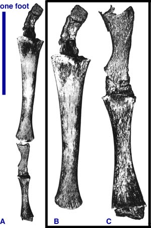
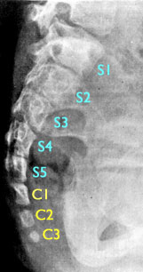
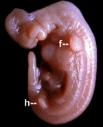
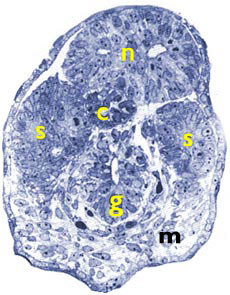

By studying the standard phylogenetic tree, it can be seen that every species has a unique genealogical history. Each species has a unique series of common ancestors linking it to the original common ancestor. We should expect that organisms carry evidence of this history and ancestry with them. The standard phylogenetic tree predicts what historical evidence is possible and what is impossible for each given species.
Part 2 Outline
- Anatomical vestigial structures
- Atavisms
- Molecular vestigial structures
- Ontogeny and developmental biology
- Present biogeography
- Past biogeography
Prediction 2.1: Anatomical vestiges
"The wing of the ostrich resembles those of the gyrfalcon and the hawk. Who does not know how the speed of the gyrfalcon and hawk in flight exceeds that of other birds? The ostrich certainly has wings like theirs but not their speed of flight. Truly, it has not the capacity to be lifted from the ground and gives only the impression of spreading its wings as if to fly; however, it never supports itself above the earth in flight.
It is exactly the same with all those hypocrites who pretend to live a life of piety, giving the impression of holiness without the reality of holy behaviour."
The Aberdeen Bestiary
Folio 41v , c. AD 1200
— on the ostrich, its vestiges a symbol of hypocrisy since the 2nd century A.D.
Some of the most renowned evidence for evolution are the various nonfunctional or rudimentary vestigial characters, both anatomical and molecular, that are found throughout biology. A vestige is defined, independently of evolutionary theory, as a reduced and rudimentary structure compared to the same complex structure in other organisms. Vestigial characters, if functional, perform relatively simple, minor, or inessential functions using structures that were clearly designed for other complex purposes. Though many vestigial organs have no function, complete non-functionality is not a requirement for vestigiality (Crapo 1985; Culver et al. 1995; Darwin 1872, pp. 601-609; Dodson 1960, p. 44; Griffiths 1992; Hall 2003; McCabe 1912, p. 264; Merrell 1962, p. 101; Moody 1962, p. 40; Muller 2002; Naylor 1982; Strickberger 2000; Weismann 1886, pp. 9-10; Wiedersheim 1893, p. 2, p. 200, p. 205).
For example, wings are very complex anatomical structures specifically adapted for powered flight, yet ostriches have flightless wings. The vestigial wings of ostriches may be used for relatively simple functions, such as balance during running and courtship displays—a situation akin to hammering tacks with a computer keyboard. The specific complexity of the ostrich wing indicates a function which it does not perform, and it performs functions incommensurate with its complexity. Ostrich wings are not vestigial because they are useless structures per se, nor are they vestigial simply because they have different functions compared to wings in other birds. Rather, what defines ostrich wings as vestigial is that they are rudimentary wings which are useless as wings.
Vestigial structures have perplexed naturalists throughout history and were noted long before Darwin first proposed universal common descent. Many eighteenth and nineteenth century naturalists identified and discussed vestigial structures, including Johann Wolfgang von Goethe (1749-1832), Georges-Louis Leclerc, Compte de Buffon (1707-1788), and Georges Cuvier (1769-1832). Over sixty years before Darwin's publication of On the Origin of Species, the eminent French anatomist Geoffroy St. Hilaire (1772-1844) discussed his observations of the vestigial wings of the cassowary and ostrich during his travels with Napoleon to Egypt:
"There is another species that, like the ostrich, never leaves the ground, the Cassowary, in which the shortening [of the wing] is so considerable, that it appears little more than a vestige of a wing. Its arm is not, however, entirely eliminated. All of the parts are found under the skin. ...
Whereas useless in this circumstance, these rudiments of the furcula have not been eliminated, because Nature never works by rapid jumps, and She always leaves vestiges of an organ, even though it is completely superfluous, if that organ plays an important role in the other species of the same family. Thus, under the skin of the Cassowary's flanks are the vestiges of the wings ..." (Geoffroy 1798)
Geoffroy was at a loss for why exactly nature "always leaves vestiges of an organ", yet he could not deny his empirical observations. Ten years later, Jean-Baptiste Lamarck (1744-1829) identified several vestigial structures in his Zoological Philosophy (Lamarck 1809, pp. 115-116):
"Eyes in the head are characteristic of a great number of different animals, and essentially constitute a part of the plan of organisation of the vertebrates. Yet the mole, whose habits require a very small use of sight, has only minute and hardly visible eyes ...
Olivier's Spalax, which lives underground like the mole, and is apparently exposed to daylight even less than the mole, has altogether lost the use of sight: so that it shows nothing more than vestiges of this organ. Even these vestiges are entirely hidden under the skin and other parts, which cover them up and do not leave the slightest access to light.
The Proteus, an aquatic reptile allied to the salamanders, and living in deep dark caves under water, has, like the Spalax, only vestiges of the organ of sight, vestiges which are covered up and hidden in the same way." (Lamarck 1809, p. 116)
Even Aristotle discussed the peculiar vestigial eyes of moles in the fourth century B.C. in De animalibus historiae (lib. I cap. IX), in which he identified them as "stunted in development" and "eyes not in the full sense".
As these individuals noted, vestiges can be especially puzzling features of organisms, since these "hypocritical" structures profess something that they do not do—they clearly appear designed for a certain function which they do not perform. However, common descent provides a scientific explanation for these peculiar structures. Existing species have different structures and perform different functions. If all living organisms descended from a common ancestor, then both functions and structures necessarily have been gained and lost in each lineage during macroevolutionary history. Therefore, from common descent and the constraint of gradualism, we predict that many organisms should retain vestigial structures as structural remnants of lost functions. Note that the exact evolutionary mechanism which created a vestigial structure is irrelevant as long as the mechanism is a gradual one.
Confirmation:
There are many examples of rudimentary and nonfunctional vestigial characters carried by organisms, and these can very often be explained in terms of evolutionary histories. For example, from independent phylogenetic evidence, snakes are known to be the descendants of four-legged reptiles. Most pythons (which are legless snakes) carry vestigial pelvises hidden beneath their skin (Cohn 2001; Cohn and Tickle 1999). The vestigial pelvis in pythons is not attached to vertebrae (as is the normal case in most vertebrates), and it simply floats in the abdominal cavity. Some lizards carry rudimentary, vestigial legs underneath their skin, undetectable from the outside (Raynaud and Kan 1992).
Many cave dwelling animals, such as the fish Astyanax mexicanus (the Mexican tetra) and the salamander species Typhlotriton spelaeus and Proteus anguinus, are blind yet have rudimentary, vestigial eyes (Besharse and Brandon 1976; Durand et al. 1993; Jeffery 2001; Kos et al. 2001). The eyes of the Mexican tetra have a lens, a degenerate retina, a degenerate optic nerve, and a sclera, even though the tetra cannot see (Jeffery 2001). The blind salamanders have eyes with retinas and lenses, yet the eyelids grow over the eye, sealing them from outside light (Durand et al. 1993; Kos et al. 2001).
Dandelions reproduce without fertilization (a condition known as apomixis), yet they retain flowers and produce pollen (both are sexual organs normally used for sexual fertilization) (Mes et al. 2002). Flowers and pollen are thus useless characters for dandelions in terms of sexual reproduction.
There are many examples of flightless beetles (such as the weevils of the genus Lucanidae) which retain perfectly formed wings housed underneath fused wing covers. All of these examples can be explained in terms of the beneficial functions and structures of the organisms' predicted ancestors (Futuyma 1998, pp. 122-123).
The ancestors of humans are known to have been herbivorous, and molar teeth are required for chewing and grinding plant material. Over 90% of all adult humans develop third molars (otherwise known as wisdom teeth). Usually these teeth never erupt from the gums, and in one third of all individuals they are malformed and impacted (Hattab et al. 1995; Schersten et al. 1989). These useless teeth can cause significant pain, increased risk for injury, and may result in illness and even death (Litonjua 1996; Obiechina et al. 2001; Rakprasitkul 2001; Tevepaugh and Dodson 1995).
Another vestige of our herbivorous ancestry is the vermiform appendix. While this intestinal structure may retain a function of some sort, perhaps in the development of the immune system, it is a rudimentary version of the much larger caecum that is essential for digestion of plants in other mammals. For a detailed discussion of the vestigiality of the human vermiform appendix, see The vestigiality of the human vermiform appendix: A modern reappraisal.
Yet another human vestigial structure is the coccyx, the four fused caudal vertebrae found at the base of the spine, exactly where most mammals and many other primates have external tails protruding from the back. Humans and other apes are some of the only vertebrates that lack an external tail as an adult. The coccyx is a developmental remnant of the embryonic tail that forms in humans and then is degraded and eaten by our immune system (for more detail see the sections on the embryonic human tail and the atavistic human tail). Our internal tail is unnecessary for sitting, walking, and elimination (all of which are functions attributed to the coccyx by many anti-evolutionists). The caudal vertebrae of the coccyx can cause extreme and unnecessary chronic pain in some unfortunate people, a condition called coccydynia. The entire coccyx can be surgically removed without any ill effects (besides surgical complications), with the only complaint, in a small fraction of patients, being that the removal of the coccyx sadly did not remove their pain (Grossovan and Dam 1995; Perkins et al. 2003; Postacchini Massobrio 1983; Ramsey et al. 2003; Shaposhnikov 1997; Wray 1991). Our small, rudimentary, fused caudal vertebrae might have some minor and inessential functions, but these vertebrae are useless for balance and grasping, their usual functions in other mammals.
Potential Falsification:
No organism can have a vestigial structure that was not previously functional in one of its ancestors. Thus, for each species, the standard phylogenetic tree makes a huge number of predictions about vestigial characters that are allowed and those that are impossible for any given species.
Shared derived characters and molecular sequence data, not vestigial characters, determine the phylogeny and the characteristics of predicted common ancestors. Thus, if common descent is false, vestigial characters very possibly could lack an evolutionary explanation. For example, whales are classified as mammals according to many criteria, such as having mammary glands, a placenta, one bone in the lower jaw, etc. Snakes likewise are classified as reptiles by several other derived features. However, it is theoretically possible that snakes or whales could have been classified as fish (as Linnaeus originally did). If this were the case, the vestigial legs of whales or the vestigial pelvises of snakes would make no sense evolutionarily and would be inconsistent with common descent.
It follows, then, that we should never find vestigial nipples or a vestigial incus bone in any amphibians, birds, or reptiles. No mammals should be found with vestigial feathers. No primates should ever be found with vestigial horns or degenerate wings hidden underneath the skin of the back. We should never find any arthropods with vestigial backbones. Snakes may occasionally have vestigial legs or arms, but they should never be found with small, vestigial wings. Humans may have a vestigial caecum, since we are descendants of herbivorous mammals, but neither we nor any other primate can have a vestigial gizzard like that found in birds. Mutatis mutandis ad infinitum.
Criticisms:
This prediction is not falsified by finding a complex or essential function for the presumed vestigial structure. Should data of this sort be found, the structure merely becomes an example of parahomology (considered in prediction 3.1) or, more likely, an example of inefficient design (considered in prediction 3.5). Observations that would be truly inconsistent with the concept of vestigiality are given above. More detailed and specific explanations of how to demonstrate that the human appendix is not vestigial are given in the Vestigiality of the human vermiform appendix FAQ.
Many anti-evolutionist authors have erroneously concluded that vestigial structures do not exist. They reason that either (1) vestigial organs are actually functional or (2) it is theoretically impossible to demonstrate that a structure has no function (for example, see Ham et al. 1990; Batten and Sarfati 2003; Bergman and Howe 1990; Morris 1986). This latter argument is based upon the false premise that negative results are used to demonstrate a lack of function, and that negative evidence is unscientific. These arguments are faulty for three reasons, each discussed below.
- Vestiges can have functions
- Positive evidence demonstrates lack of functionality
- Negative evidence is scientific when controlled
1. Vestiges can be functional
First, and most importantly, this line of argumentation is beside the point, since it is unnecessary for vestiges to lack a function (see Muller 2002 for a modern discussion of the vestigial concept that specifically includes functionality). Many true vestiges are functional (for many examples see Culver et al. 1995). In popular usage "vestigial" is often believed to be synonymous with "nonfunctional", and this confusion unfortunately has been propagated via poorly-worded definitions found in many non-technical dictionaries and encyclopedias. Even some professional research biologists have fallen prey to this oversimplification of the vestigial concept (for instance, Scadding 1981, often quoted by anti-evolutionists and discussed in the Citing Scadding (1981) and Misunderstanding Vestigiality FAQ). The statement that vestigial structures are functionless is a convenient, yet strictly incorrect, approximation. It is analogous to the common, yet strictly incorrect, scientific claim that the earth is a sphere.
Several evolution deniers have falsely claimed that biologists changed the definition of vestigial and rudimentary structures when functions were found for many vestiges (see Bergman and Howe 1990, pp. 2-3; Sarfati, J. 2002). For example, Answers in Genesis' Jonathan Sarfati states:
Historical definitions of 'Vestigial' that include functionalitySee quotes at left from Darwin 1859 and 1872, Weismann 1886, and Wiedersheim 1893.
vestigial. a. Of, pertaining to, or of the nature of a vestige; like a mere trace of what has been; also, rudimentary. In biology vestigial has a specific application to those organs or structures which are commonly called rudimentary, and are rudimentary in fact, but which are properly regarded, not as beginnings or incipient states, but as remains of parts or structures which have been better developed in an earlier stage of existence of the same organismm, or in lower preceding organisms, and have aborted or atrophied, or become otherwise reduced or rudimental in the evolution of the individual or of the species.
"Vestigial organs are sometimes pressed into a secondary use when their original function has been lost."
vestige b. (biol.) a rudimentary, degenerate survival of a former organ or structure.
vestige n. 2. Biol Specif., a small, degenerate, or imperfectly developed part or organ which has been more fully developed in an earlier stage of the individiual or in a past generation.
When structures undergo a reduction in size together with a loss of their typical function, that is, when they become vestigial, they are quite commonly considered to be degenerate and functionless. But Simpson has recently pointed out that this need not be true at all: the loss of the original function may be accompanied by specialization for a new function.
vestige. n. 2: a small and degenerate or imperfectly developed bodily part or organ that remains from one more fully developed in an earlier stage of the individual, in a past generation, or in closely related forms.
vestige. n. 2. Biol. A part or organ small or degenerate, tho ancestrally well developed.
"It is incorrect to state that to be vestigial an organ must be non-functional ... it is not essential that a vestigial organ be totally without function."
vestige A degenerate anatomical structure or organ that remains from one more fully developed and functional in an earlier phylogenetic form of the individual.
vestigial Occuring in a rudimentary condition, as a result of evolutionary reduction from a more elaborated, functional character state in an ancestor.
Vestigial Organs and Structures
vestige noun 2: a bodily part or organ that is small and degenerate or imperfectly developed in comparison to one more fully developed in an earlier stage of the individual, in a past generation, or in closely related forms.
Vestiges The feature is an adult remnant of a feature (a homologue) that is more fully formed in an ancestor and/or in a related taxon. Evidence of a vestige is some element of phylogenetic continuity of the feature and shared developmental mechanisms with ancestral or related taxa that have the fully formed feature. Vestiges either are non-functional or may have a different function from the fully formed ancestral feature. If fully developed, the adult feature would be classified as a homologue.
|
" The World Book Encyclopedia 2000 says: 'Vestigial organs are the useless remains of organs that were once useful in an evolutionary ancestor' (emphasis added). ... Some evolutionists, like Dr Meiss, now want to re-define 'vestigial' to mean simply 'reduced or altered in function'. ... AiG isn't going to let evolutionists change the rules at their whim when they are losing the argument." (Sarfati, J. 2002). "The Shorter Oxford English Dictionary (1993) defines 'vestigial' as 'degenerate or atrophied, having become functionless in the course of evolution.' Some evolutionists now re-define 'vestigial' to mean simply 'reduced or altered in function.' Thus even valuable, functioning organs (consistent with design) might now be called 'vestigial.' Creationists should not let evolutionists change the rules when they lose." (Sarfati, J. 1999).
Sarfati's arguments are invalid for several reasons.
First, even if biologists truly had changed the definition of 'vestige', why would that be a problem in science? It would not—all science changes as new data is acquired and theories become clarified. Using Sarfati's logic we would reject modern theories like Einstein's theory of relativity, since "physicists changed the rules at whim when they lost".
Second, Sarfati quotes terse, layman's definitions from a popular dictionary and a children's encyclopedia as if they were scientific authorities. It is highly likely that the person who wrote those definitions was not an evolutionary biologist. For all we know, it even may have been an anti-evolutionist or young earth creationist! Any true scientist (or legitimate scholar of any sort) would consult an advanced scientific text for definitions of technical terms, especially when attempting to criticize them. In this case, the two-volume Encyclopedia of Evolution (Muller 2002), with technical discussions written by real practicing research biologists, would be one of many appropriate sources.
Third, regardless of popular misconception, from the beginning of modern evolutionary theory a complete absence of function has not been a requirement for vestigiality (Crapo 1985; Culver et al. 1995; Darwin 1872, pp. 601-609; Dodson 1960, p. 44; Griffiths 1992; McCabe 1912, p. 264; Merrell 1962, p. 101; Moody 1962, p. 40; Muller 2002; Naylor 1982; Strickberger 2000; Weismann 1886; Wiedersheim 1893, p. 2, p. 200, p. 205). Sarfati's claim is based upon ignorance, and he of course provides no historical references showing that evolutionary biologists actually changed the definition. As an obvious counterexample, Charles Darwin never claims vestigial organs must be functionless. In his famous section on vestigial organs in On the Origin of Species, written nearly 150 years ago, Darwin in fact emphasizes that vestiges can be functional and gives several examples:
"Useful organs, however little they may be developed, unless we have reason to suppose that they were formerly more highly developed, ought not to be considered as rudimentary." (Darwin 1859, emphasis added)
"An organ, serving for two purposes, may become rudimentary or utterly aborted for one, even the more important purpose, and remain perfectly efficient for the other. Thus, in plants, the office of the pistil is to allow the pollen-tubes to reach the ovules protected in the ovarium at its base. The pistil consists of a stigma supported on the style; but in some Compositae, the male florets, which of course cannot be fecundated, have a pistil, which is in a rudimentary state, for it is not crowned with a stigma; but the style remains well developed, and is clothed with hairs as in other compositae, for the purpose of brushing the pollen out of the surrounding anthers. Again, an organ may become rudimentary for its proper purpose, and be used for a distinct object: in certain fish the swim-bladder seems to be rudimentary for its proper function of giving buoyancy, but has become converted into a nascent breathing organ or lung. Other similar instances could be given." (Darwin 1859 [see text]; also Darwin 1872, p. 602, emphasis added)
"Rudimentary organs, on the other hand, are either quite useless, such as teeth which never cut through the gums, or almost useless, such as the wings of an ostrich, which serve merely as sails." (Darwin 1872, p. 603)
"... an organ rendered, during changed habits of life, useless or injurious for one purpose, might easily be modified and used for another purpose." (Darwin 1872, p. 603)
One of the most influential evolutionary biologists of the 19th century, August Weismann, wrote on functional vestiges in 1886 in his lengthy essay, "Retrogressive development in nature":
"... for, although the latter [ostrich] does not fly, it still uses its wings as aids in running swiftly over the African plains and deserts ... Retrogression is, however, not always carried so far as to do away with a structure altogether ... But not infrequently the degenerating organ can be turned to account in some other way, and then retrogression either stops just short of actual elimination, as in the case of the wings of the ostrich, or so alters and transforms the structure as to fit it for new functions ..." (Weismann 1886, pp. 5-9)
As explained above, what is surprising about the functional, vestigial ostrich wing is not that the ostrich wing lacks any function whatsoever, but that it is a rudimentary wing unused for powered flight, its "proper purpose", as Darwin puts it. Even Robert Wiedersheim, the notorious cataloguer of 86 human vestigial structures, never claims that vestigial structures must lack functions. In the introduction to The Structure of Man, Wiedersheim defines "vestigial" in evolutionary terms:
"Comparative morphology points not only to the essentially similar plan of organization of the bodies of all Vertebrates, ... but also to the occurrence in them of certain organs, or parts of organs, now known as 'vestigial.'
By such organs are meant those which were formerly of greater physiological significance than at present." (Wiedersheim 1893, p. 2)
At the end of his book, Wiedersheim lists his 86 vestigial structures under this heading:
"B. Retrogressively modified, the Organs having become wholly or in part functionless, some appearing in the Embryo alone, others present during Life constantly or inconstantly. For the greater part Organs which may be rightly termed Vestigial." (Wiedersheim 1893, p. 200, emphasis added) "... as was pointed out in the introduction, the term vestigial, is, as a rule, only applied to such organs as have lost their original physiological significance." (Wiedersheim 1893, p. 205)
Wiedersheim, writing from an evolutionary perspective, emphasizes in his definition that vestigial structures have lost their original, greater physiological significance, not all physiological significance. He never limits vestigial structures to those lacking a function and throughout the book mentions functions of many organs he labels as vestigial.
Many anti-evolutionists enjoy quoting a paper by Steven Scadding (Scadding 1981) in which he criticizes Wiedersheim's analysis of vestigial organs as evidence for evolution. Scadding's objections are based upon the false premise that vestigial structures must have no function by definition. Wiedersheim, whom Scadding is criticizing specifically, does not make that claim. Since Scadding misrepresents Wiedersheim's position and uses an incorrect definition of vestigial in general, Scadding's points are invalid. The deep problems with Scadding's paper have been corrected in the scientific literature, and anti-evolutionists who quote this paper are engaging in poor scholarship. A detailed discussion of Scadding's 1981 paper is given in the Citing Scadding (1981) and Misunderstanding Vestigiality FAQ.
2. Positive evidence is used to demonstrate lack of function
Even though the conclusion may be negative ("structure x has no function"), the detection of biological functionality or lack thereof is based upon positive evidence, not negative evidence. In organismic biology, a function is a physical process performed by an organ that is necessary for the successful reproduction of the organism in a specific environment. Functions are measured in terms of reproduction and viability. An organ has no function in a given environment if the organ's presence has no statistically significant effect on reproductive success or viability. Both reproductive success and viability can be observed and measured quantitatively and are, thus, positive data.
3. Negative data can be used as scientific evidence
Negative evidence is certainly valid when used properly, and negative evidence is used and reported routinely in the scientific literature. The general claim that negative evidence cannot be used to test a hypothesis is a nihilistic philosophy that has no place in experimental science. Negative evidence is admissible if it is acquired with the proper experimental controls. Good experimental technique involves controlled observations, whether the evidence is positive or negative. Positive results are bolstered by negative controls; valid negative results require positive controls.
To clarify the important issue of experimental controls, consider the following analogy with physics. If it is impossible to demonstrate that a certain structure has no function, then by the same logic it is impossible to demonstrate that a given atomic element is not radioactive. However, it is well-established in physics that lead-206 is not radioactive. We know this because radioactivity is detectable from other elements, such as phosphorous-32, yet simultaneously radioactivity is undetectable from lead-206. In this physics example phosphorous-32 is a positive control, which is needed to use the negative evidence gathered from lead-206. Likewise, we can certainly demonstrate that a given structure has no function when we can simultaneously detect a function for another structure in the same environment.
Prediction 2.2: Atavisms
Anatomical atavisms are closely related conceptually to vestigial structures. An atavism is the reappearance of a lost character specific to a remote evolutionary ancestor and not observed in the parents or recent ancestors of the organism displaying the atavistic character. Atavisms have several essential features: (1) presence in adult stages of life, (2) absence in parents or recent ancestors, and (3) extreme rarity in a population (Hall 1984). For developmental reasons, the occasional occurrence of atavisms is expected under common descent if structures or functions are gradually lost between ancestor and descendant lineages (Hall 1984; Hall 1995). Here we are primarily concerned with potential atavistic structures that are characteristic of taxa to which the organism displaying the structure does not belong. As a hypothetical example, if mutant horses occasionally displayed gills, this would be considered a potential atavism, since gills are diagnostic of taxa (e.g. fish) to which horses do not belong. As with vestigial structures, no organism can have an atavistic structure that was not previously found in one of its ancestors. Thus, for each species, the standard phylogenetic tree makes a huge number of predictions about atavisms that are allowed and those that are impossible for any given species.
Confirmation:
Many famous examples of atavisms exist, including (1) rare formation of extra toes (2nd and 4th digits) in horses, similar to what is seen in the archaic horses Mesohippus and Merychippus, (2) atavistic thigh muscles in Passeriform birds and sparrows, (3) hyoid muscles in dogs, (4) wings in earwigs (normally wingless), (5) atavistic fibulae in birds (the fibulae are normally extremely reduced), (6) extra toes in guinea pigs and salamanders, (6) the atavistic dew claw in many dog breeds, and (7) various atavisms in humans (one described in detail below) (Hall 1984).
|
 Figure 2.2.1. Bones from the atavistic hind-limbs of a humpback whale. A. From top to bottom, the cartiliginous femur, tibia, tarsus, and metatarsal, arranged as found in situ in the whale. B. Enlarged detail of the femur and tibia shown in A. (scale is not the same as A). C. Detail of the tarsus and metatarsal shown in A. (Image reproduced from Andrews 1921, Figures 2, 3, and 4.) |
Example 1: Living whales and dolphins found with hindlimbs
"I knew, of course, that some modern whales have a pair of bones embedded in their tissues, each of which strengthens the pelvic wall and acts as an organ anchor. ... Whales could be born with a little extra lump of bone which evolutionists therefore insisted was a throwback corresponding to a second limb bone.
However, the spectacle of a whale being hauled out of the ocean with an actual leg hanging down from its side was a totally different issue. I don't remember my exact response, but I indicated that, if true, this would be a serious challenge to explain on the basis of a creation model." (Wieland 1998)
Young earth creationist,
CEO, Answers in Genesis - Australia,
Joint CEO, Answers in Genesis International,
Editor, Creation magazine
Probably the most well known case of atavism is found in the whales. According to the standard phylogenetic tree, whales are known to be the descendants of terrestrial mammals that had hindlimbs. Thus, we expect the possibility that rare mutant whales might occasionally develop atavistic hindlimbs. In fact, there are many cases where whales have been found with rudimentary atavistic hindlimbs in the wild (see Figure 2.2.1; for reviews see Berzin 1972, pp. 65-67 and Hall 1984, pp. 90-93). Hindlimbs have been found in baleen whales (Sleptsov 1939), humpback whales (Andrews 1921) and in many specimens of sperm whales (Abel 1908; Berzin 1972, p. 66; Nemoto 1963; Ogawa and Kamiya 1957; Zembskii and Berzin 1961). Most of these examples are of whales with femurs, tibia, and fibulae; however, some even include feet with complete digits.
For example, Figure 2.2.1 shows the bones from the atavistic legs of a humpback whale. These bones are the remnants of one of two symmetrical hind-limbs found protruding from the ventral side of a female humpback whale, captured by a whaling ship from the Kyuquot Station near the west coast of Vancouver Island, British Columbia, in July 1919. Two officials of the Consolidated Whaling Company were understandably impressed by this discovery, and they removed one of the legs and presented the skeletal remains to the Provincial Museum in Victoria, B.C. (The other leg was evidently taken as a "souvenir" by crew members of the whaling ship). The museum's director, Francis Kermode, presented the bones to Roy Chapman Andrews from the American Museum of Natural History (AMNH) in New York. Andrews reported the findings, along with photographs of the whale from the whaling crew, in American Museum Novitates, the journal of the AMNH. Andrews identified in the remains a shrunken cartiliginous femur, tibia, tarsus, and metatarsal. Both legs initially were over four feet long and covered in normal blubber and skin. For comparison, an average adult female humpback is around 45 feet long. The femur, composed of unossified cartilage, had shrunken from 15 inches to 4.5 inches. When attached to the whale, the femur was completely inside the body cavity and attached to the pelvic rudiments (humpback whales have vestiges of a pelvis inside the abdominal wall). This extraordinary finding is unlikely to be repeated, as the International Whaling Commission gave humpback whales worldwide protection status in 1966, after sixty years of uncontrolled human predation had decimated the population.
On October 28, 2006, Japanese fishermen captured a four-finned dolphin off the coast of western Japan, and donated the whale to the Taiji Whaling Museum where it is currently being studied. This bottlenose dolphin has an extra set of hindlimbs, two well-formed palm-sized flippers that move and flap like the normal fore-flippers (see Figure 2.2.2). As with other atavistic structures, these limbs are likely the result of a rare mutation that allows an underlying, yet cryptic, developmental pathway to become reactivated. These limbs are prima facie evidence of the dolphin's four-limbed ancestry, as predicted from the common ancestry of dolphins and other land-dwelling mammals.
Example 2: Newborn babies born with tails
Primarily due to intense medical interest, humans are one of the best characterized species and many developmental anomalies are known. There are several human atavisms that reflect our common genetic heritage with other mammals. One of the most striking is the existence of the rare "true human tail" (also variously known as "coccygeal process", "coccygeal projection", "caudal appendage", and "vestigial tail"). More than 100 cases of human tails have been reported in the medical literature. Less than one third of the well-documented cases are what are medically known as "pseudo-tails" (Dao and Netsky 1984; Dubrow et al. 1988). Pseudo-tails are not true tails; they are simply lesions of various types coincidentally found in the caudal region of newborns, often associated with the spinal column, coccyx, and various malformations.
In contrast, the true atavistic tail of humans results from incomplete regression of the most distal end of the normal embryonic tail found in the developing human fetus (see Figure 2.4.1 and the discussion below on the development of the normal human embryonic tail; Belzberg et al. 1991; Dao and Netsky 1984; Grange et al. 2001; Keith 1921). Though formally a malformation, the true human tail is usually benign in nature (Dubrow et al. 1988; Spiegelmann et al. 1985). The true human tail is characterized by a complex arrangement of adipose and connective tissue, central bundles of longitudinally arranged striated muscle in the core, blood vessels, nerve fibres, nerve ganglion cells, and specialized pressure sensing nerve organs (Vater-Pacini corpuscles). It is covered by normal skin, replete with hair follicles, sweat glands, and sebaceous glands (Dao and Netsky 1984; Dubrow et al. 1988; Spiegelmann et al. 1985). True human tails range in length from about one inch to over 5 inches long (on a newborn baby), and they can move via voluntary striped muscle contractions in response to various emotional states (Baruchin et al. 1983; Dao and Netsky 1984; Harrison 1901; Keith 1921; Lundberg et al. 1962).
Although human tails usually lack skeletal structures (some medical articles have claimed that true tails never have vertebrae), several human tails have also been found with cartilage and up to five, well-developed, articulating vertebrae (see Figure 2.2.3; Bar-Maor et al. 1980; Dao and Netsky 1984; Fara 1977; Sugumata et al. 1988). However, caudal vertebrae are not a necessary component of mammalian tails. Contrary to what is frequently reported in the medical literature, there is at least one known example of a primate tail that lacks vertebrae, as found in the rudimentary two-inch-long tail of Macaca sylvanus (the "Barbary ape") (Hill 1974, p. 616; Hooten 1947, p. 23).
True human tails are rarely inherited, though several familial cases are known (Dao and Netsky 1984; Ikpeze and Onuigbo 1999; Touraine 1955). In one case the tail has been inherited through at least three generations of females (Standfast 1992).
|
 |
Figure 2.2.3. X-ray image of an atavistic tail found in a six-year old girl. A radiogram of the sacral region of a six-year old girl with an atavistic tail. The tail was perfectly midline and protruded form the lower back as a soft appendage. The five normal sacral vertebrae are indicated in light blue and numbered; the three coccygeal tail vertebrae are indicated in light yellow. The entire coccyx (usually three or four tiny fused vertebrae) is normally the same size as the fifth sacral vertebrae. In this same study, the surgeons reported two other cases of an atavistic human tail, one with three tail vertebrae, one with five. All were benign, and only one was surgically "corrected" for cosmetic reasons (image reproduced from Bar-Maor et al. 1980, Figure 3.) |
As with other atavistic structures, human tails are most likely the result of either a somatic mutation, a germline mutation, or an environmental influence that reactivates an underlying developmental pathway which has been retained, if only partially, in the human genome (Dao and Netsky 1984; Hall 1984; Hall 1995). In fact, the genes that control the development of tails in mice and other vertebrates have been identified (the Wnt-3a and Cdx1 genes; Greco et al. 1996; Prinos et al. 2001; Schubert et al. 2001; Shum et al. 1999; Takada et al. 1994). As predicted by common descent from the atavistic evidence, these tail genes have also been discovered in the human genome (Katoh 2002; Roelink et al. 1993). As discussed below in detail, the development of the normal human tail in the early embryo has been investigated extensively, and apoptosis (programmed cell death) plays a significant role in removing the tail of a human embryo after it has formed. It is now known that down-regulation of the Wnt-3a gene induces apoptosis of tail cells during mouse development (Greco et al. 1996; Shum et al. 1999; Takada et al. 1994), and similar effects are observed in humans (Chan et al. 2002). Additionally, researchers have identified a mutant mouse that does not develop a tail, and this phenotype is due to a regulatory mutation that decreases the Wnt-3a gene dosage (Greco et al. 1996; Gruneberg and Wickramaratne 1974; Heston 1951). Thus, current evidence indicates that the genetic cause of tail loss in the evolution of apes was likely a simple regulatory mutation(s) that slightly decreased Wnt-3a gene dosage. Conversely, a mutation or environmental factor that increased dosage of the Wnt-3a gene would reduce apoptosis of the human tail during development and would result in its retention, as an atavism, in a newborn.
Criticisms:
The existence of true human tails is unfortunately quite shocking for many religiously motivated anti-evolutionists, such as Duane Gish, who has written an often-quoted article entitled "Evolution and the human tail" (Gish 1983; see also Menton 1994; ReMine 1982). Solely based on the particulars of a single case study (Ledley 1982), these authors have erroneously concluded that atavistic human tails are "nothing more than anomalous malformations not traceable to any imaginary ancestral state" (Gish 1983). However, their arguments are clearly directed against pseudo-tails, not true tails. Gish claims these structures are not true tails for several reasons: (1) they lack vertebrae, (2) they are not inherited, and (3) the resemblance to tails is "highly superficial" and simply an "anomalous malformation". Menton further claims that (4) all true tails have muscles and can move, whereas human tails cannot. Each of these arguments are factually false, as explained above and as well-documented in the medical literature. Vertebrae and cartilage have occasionally been found in human tails. However, contrary to the claims of Gish, Menton, and ReMine, vertebrae are not a requirement for tails. M. sylvanus is a prime example of a primate whose fleshy tail lacks vertebrae (Hill 1974, p. 616; Hooten 1947, p. 23). Several cases are known where human tails have been inherited. Furthermore, we now know the genes responsible for the development of tails in mammals, and all humans have them. Inheritance of the tail structure per se is unnecessary since the developmental system has been inherited but is normally inactivated in humans. The "resemblance" to non-human tails is far from superficial, since all true human tails are complex structures composed of symmetrical layers of voluntary muscle, blood vessels, specialized nerves and sensing organs, and they can indeed move and contract.
For the skeptical reader, probably the best evidence that these structures are true tails is visual inspection. Photographic images of a newborn's atavistic tail can be found at the Anatomy Atlases medical site, complete with the voluntary contractory movement of the tail documented.
Potential Falsification:
These are essentially the same as for vestigial structures above.
Prediction 2.3: Molecular vestigial characters
Vestigial characters should also be found at the molecular level. Humans do not have the capability to synthesize ascorbic acid (otherwise known as Vitamin C), and the unfortunate consequence can be the nutritional deficiency called scurvy. However, the predicted ancestors of humans had this function (as do most other animals except primates and guinea pigs). Therefore, we predict that humans, other primates, and guinea pigs should carry evidence of this lost function as a molecular vestigial character (nota bene: this very prediction was explicitly made by Nishikimi and others and was the impetus for the research detailed below) (Nishikimi et al. 1992; Nishikimi et al. 1994).
Confirmation:
Recently, the L-gulano-γ-lactone oxidase gene, the gene required for Vitamin C synthesis, was found in humans and guinea pigs (Nishikimi et al. 1992; Nishikimi et al. 1994). It exists as a pseudogene, present but incapable of functioning (see prediction 4.4 for more about pseudogenes). In fact, since this was originally written the vitamin C pseudogene has been found in other primates, exactly as predicted by evolutionary theory. We now have the DNA sequences for this broken gene in chimpanzees, orangutans, and macaques (Ohta and Nishikimi 1999). And, as predicted, the malfunctioning human and chimpanzee pseudogenes are the most similar, followed by the human and orangutan genes, followed by the human and macaque genes, precisely as predicted by evolutionary theory. Furthermore, all of these genes have accumulated mutations at the exact rate predicted (the background rate of mutation for neutral DNA regions like pseudogenes) (Ohta and Nishikimi 1999).
There are several other examples of vestigial human genes, including multiple odorant receptor genes (Rouquier et al. 2000), the RT6 protein gene (Haag et al. 1994), the galactosyl transferase gene (Galili and Swanson 1991), and the tyrosinase-related gene (TYRL) (Oetting et al. 1993).
Our odorant receptor (OR) genes once coded for proteins involved in now lost olfactory functions. Our predicted ancestors, like other mammals, had a more acute sense of smell than we do now; humans have >99 odorant receptor genes, of which ~70% are pseudogenes. Many other mammals, such as mice and marmosets, have many of the same OR genes as us, but all of theirs actually work. An extreme case is the dolphin, which is the descendant of land mammals. It no longer has any need to smell volatile odorants, yet it contains many OR genes, of which none are functional — they are all pseudogenes (Freitag et al. 1998).
The RT6 protein is expressed on the surface of T lymphocytes in other mammals, but not on ours. The galactosyl transferase gene is involved in making a certain carbohydrate found on the cell membranes of other mammals. Tyrosinase is the major enzyme responsible for melanin pigment in all animals. TYRL is a pseudogene of tyrosinase.
It is satisfying to note that we share these vestigial genes with other primates, and that the mutations that destroyed the ability of these genes perform their metabolic functions are also shared with several other primates (see predictions 4.3-4.5 for more about shared pseudogenes).
Potential Falsification:
It would be very puzzling if we had not found the L-gulano-γ-lactone oxidase pseudogene or the other vestigial genes mentioned. In addition, we can predict that we will never find vestigial chloroplast genes in any metazoans (i.e. animals) (Li 1997, pp. 284-286, 348-354).
Prediction 2.4: Ontogeny and Development of Organisms
- Example 1: mammalian ear bones and reptile jaws
- Example 2: pharyngeal pouches and branchial arches
- Example 3: snake and whale embryos with legs
- Example 4: embryonic human tail
- Example 5: marsupial eggshell and caruncle
Embryology and developmental biology have provided some fascinating insights into evolutionary pathways. Because morphological cladistic classifications of species are generally based on derived characters of adult organisms, embryology and developmental studies provide a nearly independent body of evolutionary evidence. The final adult structure of an organism is the product of numerous cumulative developmental processes. For a species to evolve morphologically, these developmental processes necessarily must have changed. The macroevolutionary conclusion is that the development of an organism is a modification of its ancestors' ontogenies (Futuyma 1998, pp. 652-653). Early in the 20th century, developmental biologist Walter Garstang first stated correctly that ontogeny creates phylogeny. What this means is that once given knowledge about an organism's ontogeny, we can confidently predict certain aspects of the historical pathway that was involved in this organism's evolution (Gilbert 1997, pp. 912-914). Thus, embryology provides testable confirmations and predictions about macroevolution.
Confirmation:
Example 1: mammalian ear bones and the reptilian jaw
From embryological studies it is known that two bones of a developing reptile eventually form the quadrate and the articular bones in the hinge of the adult reptilian jaw (first reported in 1837 by the German embryologist Karl Reichert). However, in the marsupial mammalian embryo, the same two structures develop, not into parts of the jaw, but into the anvil and hammer of the mammalian ear. This developmental information, coupled with common descent, indicates that the mammalian middle ear bones were derived and modified from the reptilian jaw bones during evolution (Gilbert 1997, pp. 894-896).
Accordingly, there is a very complete series of fossil intermediates in which these structures are clearly modified from the reptilian jaw to the mammalian ear (compare the intermediates discussed in prediction 1.4, example 2) (Carroll 1988, pp. 392-396; Futuyma 1998, pp. 146-151; Gould 1990; Kardong 2002, pp. 255-275).
Example 2: vertebrate pharyngeal pouches and branchial arches
There are numerous other examples in which an organism's evolutionary history is represented temporarily in its development. Early in development, mammalian embryos temporarily have pharyngeal pouches, which are morphologically indistinguishable from aquatic vertebrate gill pouches (Gilbert 1997, pp. 380, 382). This evolutionary relic reflects the fact that mammalian ancestors were once aquatic gill-breathing vertebrates. The pharyngeal pouches of modern fish embryos eventually become perforated to form gills. Mammalian pharyngeal pouches of course do not develop into gills, but rather give rise to structures that evolved from gills, such as the eustachian tube, middle ear, tonsils, parathyroid, and thymus (Kardong 2002, pp. 52, 504, 581). The arches between the gills, called branchial arches, were present in jawless fish and some of these branchial arches later evolved into the bones of the jaw, and, eventually, into the bones of the inner ear as recounted above and in prediction 1.4, example 2.
|
Figure 2.4.2. Dolphin embryo with well-developed early hindlimb bud. Embryo of the spotted dolphin (Stenella attenuata) at 24 days gestation. f = well-developed forlimb bud, h = well-developed early hindlimb bud. Also compare with the cat and human embryos of similar age in Figure 2.4.1 above. (Reproduced from Sedmera et al. 1997) |
 |
Example 3: hindlimbs in snake and whale embryos
Many species of snakes and legless lizards (such as the "slow worm") initially develop limb buds in their embryonic development, only to reabsorb them before hatching (Raynaud 1990; Raynaud and Kan 1992; Raynaud and Van den Elzen 1976). Similarly, modern adult whales, dolphins, and porpoises have no hind legs. Even so, hind legs, complete with various developing leg bones, nerves, and blood vessels, temporarily appear in the cetacean fetus and subsequently degenerate before birth (Amasaki et al. 1989; Sedmera et al. 1997). These rudimentary hindlimb buds persist longer in the embryos of baleen humpback whales (Megaptera nodosa) than in other cetaceans, a fact which may explain why atavistic external hindlimbs are found more often in baleen whales than in other cetaceans (Bejder and Hall 2002; for photographs of the large atavistic femur, tibia, and tarsus found in a female humpback whale see Figure 2.2.1 above; photographs of the developing hindlimb bud in the dolphin can be found at the Digital Library of Dolphin Development).
Example 4: the embryonic human tail
Humans are classified by taxonomists as apes; one of the defining derived characters of apes is the lack of an external tail. However, human embryos initially develop tails in development. At between four and five weeks of age, the normal human embryo has 10-12 developing tail vertebrae which extend beyond the anus and legs, accounting for more than 10% of the length of the embryo (Fallon and Simandl 1978; Moore and Persaud 1998, pp. 91-100; Nievelstein et al. 1993). The embryonic tail is composed of several complex tissues besides the developing vertebrae, including a secondary neural tube (spinal cord), a notochord, mesenchyme, and tail gut. By the eighth week of gestation, the sixth to twelfth vertebrae have disappeared via cell death, and the fifth and fourth tail vertebrae are still being reduced. Likewise, the associated tail tissues also undergo cell death and regress.
|
 Figure 2.4.3. A histological cross-section of the human embryo's tail at Carnegie stage 14. The complex structures present in the human tail were visualized with light microscopy in this image. At Carnegie stage 14 (about 32 days old), the human tail is composed of neural tube (n, doubled in a large fraction of embryos), notochord (c), developing vertebrae (somites, s), gut (g), and mesenchyme (m). These specialized structures extend for the length of the tail, and the cells of all these structures die and are digested by immune system macrophages within the next two weeks of embryonic development. (Modified from plate 22 of Fallon and Simandl 1978) |
Using light and scanning electron microscopy, several detailed analyses of the embryonic human tail have shown that the dead and degenerating tail cells are ingested and digested by macrophages (macrophages are large white blood cells of the immune system which more normally ingest and destroy invading pathogens such as bacteria) (Fallon and Simandl 1978; Nievelstein et al. 1993; Sapunar et al. 2001; Saraga-Babic et al. 1994; Saraga-Babic et al. 2002). In adult humans, the tail is finally reduced to a small bone composed of just four fused vertebrae (the coccyx) which do not protrude from the back (Fallon and Simandl 1978; Sapunar et al. 2001) (see Figure 2.4.1).
The regression of the human embryonic tail can be clearly seen in the fantastic images available at the Multi-dimensional Human Embryo site, where online images of three-dimensional MRI scans of live human embryos are archived. Different levels of maturity of the human embryo are classified according to the Carnegie stages. The embryonic post-anal tail is clearly visible in Carnegie stages 14, 15, and 16. The site has movies of a human embryo in rotation, giving clear views of the embryo's three-dimensional contours. Most stages have movies with the neural tube highlighted. It is especially informative to compare these rotating movies of the early stages (e.g. Carnegie stage 14 or stage 15) with the last stage (Carnegie stage 23), where the regression by cell death of the neural tube in the tail is clearly evident.
Example 5: marsupial eggshells and caruncles
Reptiles and birds lay eggs, and the emerging young use either an "egg-tooth" to cut through a leathery keratinous eggshell (as found in lizards and snakes) or a specialized structure, called a caruncle, to crack their way out of a hard calcerous eggshell (as found in turtles and birds). Mammals evolved from a reptile-like ancestor, and placental mammals (like humans and dogs) have lost the egg-tooth and caruncle (and, yes, the eggshell). However, monotremes, such as the platypus and echidna, are primitive mammals that have both an egg-tooth and a caruncle, even though the monotreme eggshell is thin and leathery (Tyndale-Biscoe and Renfree 1987, p. 409). Most strikingly, during marsupial development, an eggshell forms transiently and then is reabsorbed before live birth. Though they have no need to hack through a hard egg-shell, several marsupial newborns (such as baby Brushtail possums, koalas, and bandicoots) retain a vestigial caruncle as a clear indicator of their reptilian, oviparous ancestry (Tyndale-Biscoe and Renfree 1987, p. 409).
Potential Falsification:
Based on our standard phylogenetic tree, we may expect to find gill pouches or egg shells at some point in mammalian embryonic development (and we do). However, we never expect to find nipples, hair, or a middle-ear incus bone at any point in fish, amphibian, or reptilian embryos. Likewise, we might expect to find teeth in the mouths of some avian embryos (as we do), but we never expect to find bird-like beaks in eutherian mammal embryos (eutherians are placental mammals such as humans, cows, dogs, or rabbits). We may expect to find human embryos with tails (and we do; see Figure 2.3.1), but we never expect to find leg buds or developing limbs in the embryos of manta rays, eels, teleost fish, or sharks. Any such findings would be in direct contradiction to macroevolutionary theory (Gilbert 1997, esp. Ch. 23).
Criticisms:
Some evolutionary critics wrongly think that because Ernst Haeckel's "Biogenetic Law" is false, embryology can no longer provide evidence for evolution. However, this is a curious assessment, since neither modern evolutionary theory nor modern developmental biology are based upon Haeckel's observations and theories. The discussion above is in no way an endorsement of either "Von Baer's Laws" or Haeckel's Biogenetic Law. Both of these fail as scientific laws, and both are incorrect as generalizations. Evolutionary change can proceed via these patterns, but it often does not.
The ideas of Ernst Haeckel greatly influenced the early history of embryology in the 19th century. Haeckel hypothesized that "Ontogeny Recapitulates Phylogeny", meaning that during its development an organism passes through stages resembling its adult ancestors. However, Haeckel's ideas long have been superseded by those of Karl Ernst von Baer, his predecessor. Von Baer suggested that the embryonic stages of an individual should resemble the embryonic stages of other closely related organisms, rather than resembling its adult ancestors. Haeckel's Biogenetic Law has been discredited since the late 1800's, and it is not a part of modern (or even not-so-modern) evolutionary theory. Haeckel thought only the final stages of development could be altered appreciably by evolution, but we have known that to be false for nearly a century. All developmental stages can be modified during evolution, though the phylotypic stage may be more constrained than others. For more about Haeckel's Biogenetic Law, developmental phylotypes, and the evidence embryology provides in modern evolutionary theory, see "Wells and Haeckel's Embryos" by PZ Meyers, or refer to a modern developmental biology college-level textbook such as Gilbert 1997, pp. 912-914.
Prediction 2.5: Present biogeography
Because species divergence happens not only in the time dimension, but also in spatial dimensions, common ancestors originate in a particular geographical location. Thus, the spatial and geographical distribution of species should be consistent with their predicted genealogical relationships. The standard phylogenetic tree predicts that new species must originate close to the older species from which they are derived. Closely related contemporary species should be close geographically, regardless of their habitat or specific adaptations. If they are not, there had better be a good explanation, such as extreme mobility (cases like sea animals, birds, human mediated distribution, etc.), continental drift, or extensive time since their divergence. In this sense, the present biogeographical distribution of species should reflect the history of their origination.
A reasonable nonevolutionary prediction is that species should occur wherever their habitat is. However, macroevolution predicts just the opposite — there should be many locations where a given species would thrive yet is not found there, due to geographical barriers (Futuyma 1998, pp. 201-203).
Confirmation:
With few exceptions, marsupials only inhabit Australia. The exceptions (some South American species and the opossum) are explained by continental drift (South America, Australia, and Antarctica were once the continent of Gondwanaland). Conversely, placental mammals are virtually absent on Australia, despite the fact that many would flourish there. Humans introduced most of the few placentals found on Australia, and they have spread rapidly.
Similarly, the southern reaches of South America and Africa and all of Australia share lungfishes, ostrich-like birds (ratite birds), and leptodactylid frogs — all of which occur nowhere else. Alligators, some related species of giant salamander, and magnolias only occur in Eastern North America and East Asia (these two locations were once spatially close in the Laurasian continent).
In addition, American, Saharan and Australian deserts have very similar habitats, and plants from one grow well in the other. However, indigenous Cacti only inhabit the Americas, while Saharan and Australian vegetation is very distantly related (mostly Euphorbiaceae). Humans introduced the only Cacti found in the Australian outback, and they grow quite well in their new geographical location.
The west and east coast of South America is very similar in habitat, but the marine fauna is very different. In addition, members of the closely related pineapple family inhabit many diverse habitats (such as rainforest, alpine, and desert areas), but only in the American tropics, not African or Asian tropics (Futuyma 1998, ch. 8).
Potential Falsification:
From a limited knowledge of species distributions, we predict that we should never find elephants on distant Pacific islands, even though they would survive well there. Similarly, we predict that we should not find amphibians on remote islands, or indigenous Cacti on Australia. Closely related species could be distributed evenly worldwide, according to whichever habitat best suits them. If this were the general biogeographical pattern, it would be a strong blow to macroevolution (Brown and Lomolino 1998).
Prediction 2.6: Past biogeography
Past biogeography, as recorded by the fossils that are found, must also conform to the standard phylogenetic tree.
Example 1: marsupials
As one example, we conclude that fossils of the hypothetical common ancestors of South American marsupials and Australian marsupials should be found dating from before these two landmasses separated.
Confirmation:
Consequently, we find the earliest marsupial fossils (e.g., Alphadon) from the Late Cretaceous, when South America, Antarctica, and Australia were still connected. Additionally, the earliest ancestors of modern marsupials are actually found on North America. The obvious paleontological deduction is that extinct marsupials fossil organisms should be found on South America and Antarctica, since marsupials must have traversed these continents to reach their present day location in Australia. Interestingly, we have found marsupial fossils on both South America and on Antarctica. This is an astounding macroevolutionary confirmation, given that no marsupials live on Antarctica now (Woodburne and Case 1996).
Potential Falsification:
We confidently predict that fossils of recently evolved animals like apes and elephants should never be found on South America, Antarctica, or Australia (excepting, of course, the apes that travel by boat).
Example 2: horses
As a second example, very complete fossil records should be smoothly connected geographically. Intermediates should be found close to their fossil ancestors.
Confirmation:
The Equidae (i.e. horse) fossil record is very complete (though extremely complex) and makes very good geographical sense, without any large spatial jumps between intermediates. For instance, at least ten intermediate fossil horse genera span the past 58 million years. Each fossil genus spans approximately 5 million years, and each of these genera includes several intermediate paleospecies (usually 5 or 6 in each genus) that link the preceding and following fossil intermediates. They range from the earliest genus, Hyracotherium, which somewhat resembled a dog, through Orohippus, Epihippus, Mesohippus, Miohippus, Parahippus, Merychippus, Dinohippus, Equus, to Modern Equus. Every single one of the fossil ancestors of the modern horse are found on the North American continent (MacFadden 1992, pp. 99, 156-162). For more detail about the known evolution of the Equidae, consult Kathleen Hunt's thorough FAQ on Horse Evolution.
Potential Falsification:
It would be macroevolutionarily devastating if we found in South America an irrefutable Epihippus or Merychippus (or any of the intermediates in-between) from the Paleocene, Eocene, Oligocene, the Miocene, or anytime before the Isthmus of Panama arose to connect North and South America (about 12 million years ago). Moreover, we should never find fossil horse ancestors on Australia or Antarctica from any geological era (MacFadden 1992; Brown and Lomolino 1998).
Example 3: apes and humans
As our third example, consider the African apes. Humans are most closely related to the great apes that are indigenous to Africa (as determined by cladistic morphological analysis and confirmed by DNA sequence analysis). Why did the Leakeys, Raymond Dart, and Robert Broom go to Africa in search of early hominid fossils? Why not dig in Australia, North America, South America, Siberia, or Mesopotamia? Charles Darwin gave an answer for this question over 130 years ago - long before any early hominid fossils had been found.
"We are naturally led to enquire, where was the birthplace of man at that stage of descent when our progenitors diverged from the Catarrhine stock? The fact that they belonged to this stock clearly shews that they inhabited the Old World; but not Australia nor any oceanic island, as we may infer from the laws of geographical distribution. In each great region of the world the living mammals are closely related to the extinct species of the same region. It is therefore probable that Africa was formerly inhabited by extinct apes closely allied to the gorilla and chimpanzee; and as these two species are now man's nearest allies, it is somewhat more probable that our early progenitors lived on the African continent than elsewhere." (Darwin 1871, p. 161)
Thus, the theory of common descent predicts that we may find early hominid fossils on the African continent.
Confirmation:
Numerous transitional fossils between humans and the great apes have been found in southern and eastern Africa. For examples, discussion, pictures, detail, and extensive references refer to Jim Foley's comprehensive Fossil Hominids FAQ. These examples include such fossil species as Ardipithecus ramidus, Australopithecus anamensis, Australopithecus afarensis, Australopithecus garhi, Kenyanthropus platyops, Kenyanthropus rudolfensis, Homo habilis, and a host of other transitionals thought to be less related to Homo sapiens, such as the robust australopithicenes. At this point in time, the difficulty in reconstructing exact genealogical relationships among all of these fossils species is that there are too many links, not that there are missing links. Like most family trees, the family tree of the hominids is best described as a wildly branching bush.
Potential Falsification:
We do not expect to ever find any Australopithicus, Ardipithecus, or Kenyanthropus fossils in Australia, North America, South America, Antarctica, Siberia, or on any oceanic islands removed from Africa. Any such findings would be catastrophically problematic for the theory of common descent.
References
Abel, O. (1908) "Die Morphologie der Huftbeinrudimente der Cetaceen." Denkschr. Math. Naturw. Klasse Kaiserl. Aka. Wiss. Vol. 81.
Amasaki, H., Ishikawa, H., and Daigo, M. (1989) "Developmental changes of the fore- and hind-limbs in the fetuses of the southern minke whale, Balaenoptera acutorostrata." Anat Anz 169: 145-148. [PubMed]
Andrews, R. C. (1921) "A remarkable case of external hind limbs in a humpback whale." Amer. Mus. Novitates. No. 9. June 3, 1921. http://hdl.handle.net/2246/4849
Bar-Maor, J. A., Kesner, K. M., and Kaftori, J. K. (1980) "Human tails." J Bone Joint Surg Br. 62-B: 508-510. [PubMed]
Baruchin, A. M., Mahler, D., Hauben, D. J., and Rosenberg, L. (1983) "The human caudal appendage (human tail)." Br J Plast Surg. 36: 120-123. [PubMed]
Batten, D., and Sarfati, J. (2003) "'Vestigial' Organs: What do they prove?" http://www.answersingenesis.org/docs/446.asp
Bejder, L. and Hall, B.K. (2002) "Limbs in whales and limblessness in other vertebrates: mechanisms of evolutionary and developmental transformation and loss." Evol Dev 4: 445-458. [PubMed]
Belzberg, A. J., Myles, S. T., and Trevenen, C. L. (1991) "The human tail and spinal dysraphism." J Pediatr Surg 26: 1243-1245. [PubMed]
Bergman, J. and Howe, G. (1990) "Vestigial Organs" Are Fully Functional. Kansas City, MO. Creation Research Society Books.
Berzin, A. A. (1972) The Sperm Whale. Pacific Scientific Research Institute of Fisheries and Oceanography. Israel Program for Scientific Translations, Jerusalem. Available from the U. S. Dept. of Commerce, National Technical Information Service. Springfield, VA.
Besharse, J. C., and Brandon, R. A. (1976) "Effects of continuous light and darkness on the eyes of the troglobitic salamander Typhlotriton spelaeus." J Morphol149: 527-546. [PubMed]
Brown, J. H., and Lomolino, M. V. (1998) Biogeography. Second edition. Boston, MA: Sunderland.
Carroll, R. L. (1988) Vertebrate Paleontology and Evolution. New York, W. H. Freeman and Co.
Carroll, R. L. (1997) Patterns and Processes of Vertebrate Evolution. Cambridge: Cambridge University Press.
Chan, B. W., Chan, K. S., Koide, T., Yeung, S. M., Leung, M. B., Copp, A. J., Loeken, M. R., Shiroishi, T., and Shum, A. S. (1994) "Maternal diabetes increases the risk of caudal regression caused by retinoic acid." Diabetes 51: 2811-2816. [PubMed]
Cohn, M. J. (2001) "Developmental mechanisms of vertebrate limb evolution." Novartis Found Symp. 232: 47-57. [PubMed]
Cohn, M. J., and Tickle, C. (1999) "Developmental basis of limblessness and axial patterning in snakes." Nature 399: 474-479. [PubMed]
Crapo, R. (1985) "Are the vanishing teeth of fetal baleen whales useless?" Origins Research 7: 1.
Culver, D.C., Fong, D.W., and Kane T.C. (1995) "Vestigialization and Loss of Nonfunctional Characters." Annual Review of Ecology and Systematics 26: 249-268.
Dao, A. H., and Netsky, M. G. (1984) "Human tails and pseudotails." Human Pathology 15: 449-453. [PubMed]
Darwin, C. (1859) The Origin of Species. First Edition. [HTML formatted text at Talk.Origins Archive]
Darwin, C. (1871) The Descent of Man. Amherst, New York, Prometheus Books.
Darwin, C. (1872) The Origin of Species. Sixth Edition. The Modern Library, New York. [Project Gutenberg text file]
Dictionary of Bioscience. (1997) Sybil P. Parker, editor in chief. New York: McGraw-Hill.
Dodson, E. O. (1960) Evolution: Process and Product. New York: Reinhold Publishers.
Dubrow, T. J., Wackym, P. A., and Lesavoy, M. A. (1988) "Detailing the human tail." Annals of Plastic Surgery 20:340-344. [PubMed]
Durand, J., Keller, N., Renard, G., Thorn, R., and Pouliquen, Y. (1993) "Residual cornea and the degenerate eye of the cryptophthalmic Typhlotriton spelaeus." Cornea 12: 437-447. [PubMed]
Fallon, J. F., and Simandl, B. K. (1978) "Evidence of a role for cell death in the disappearance of the embryonic human tail." Am J Anat 152: 111-129. [PubMed]
Fara, M. (1977) "Coccygeal ('tail') projection with cartilage content." Acta Chir. Plast. 19: 50-55. [PubMed]
Freitag, J., G. Ludwig, et al. (1998) "Olfactory receptors in aquatic and terrestrial vertebrates." Journal of Comparative Physiology 183: 635-650. [PubMed]
Futuyma, D. (1998) Evolutionary Biology. Third edition. Sunderland, Mass., Sinauer Associates.
Galili, U., and Swanson, K. (1991) "Gene sequences suggest inactivation of alpha-1,3-galactosyltransferase in catarrhines after the divergence of apes from monkeys." PNAS 88: 7401-7404. http://www.pnas.org/cgi/content/abstract/88/16/7401
Geoffroy St. Hilaire (1798) "Observations sur l'aile de l'Autruche, par le citoyen Geoffroy." in La Decade Egyptienne, Journal Litteraire et D'Economie Politique. Premier Volume. Au Kaire, de L'Impreimerie Nationale. pp. 46-51
Gilbert, S. F. (1997) Developmental Biology. Fifth edition. Sinauer Associates.
Gish, D. T. (1983) "Evolution and the human tail." ICR Impact No. 117 http://www.icr.org/index.php?module=articles&action=view&ID=210
Gould, S. J. (1990) "An earful of jaw." Natural History 3: 12-23.
Grange, G., Tantau, J., Pannier, E., Aubry, M. C., Viot, G., Fallet-Bianco, C., Terrasse, G., and Cabrol, D. (2001) "Prenatal diagnosis of fetal tail and postabortum anatomical description." Ultrasound Obstet Gynecol 18: 531-533. [PubMed]
Greco, T. L., Takada, S., Newhouse, M. M., McMahon, J. A., McMahon, A. P., Camper, S. A. (1996) "Analysis of the vestigial tail mutation demonstrates that Wnt-3a gene dosage regulates mouse axial development." Genes Dev 10: 313-324. [PubMed]
Griffiths, P. (1992) "Adaptive explanation and the concept of a vestige." in Trees of Life: essays in philosophy of biology. Edited by Paul Griffiths. Dordrecht, Boston: Kluwer Academic Publishers.
Grosso, N. P., and van Dam, B. E. (1995) "Total coccygectomy for the relief of coccygodynia: a retrospective review." J Spinal Disord 8: 328-330. [PubMed]
Gruneberg, H. and Wickramaratne, G. A. (1974) "A re-examination of two skeletal mutants of the mouse, vestigial-tail (vt) and congenital hydrocephalus (ch)." J Embryol Exp Morphol. 31: 207-22. [PubMed]
Haag, F., Koch-Nolte, F. et al. (1994) "Premature stop codons inactivate the RT6 genes of the human and chimpanzee species." Journal of Molecular Biology 243: 537-546. [PubMed]
Hall, B. K. (1984) "Developmental mechanisms underlying the formation of atavisms." Biol. Rev. 59: 89-124.
Hall, B. K. (1995) "Atavisms and atavistic mutations." Nature Genetics 10: 126-127. [PubMed]
Hall, B. K. (2003) "Descent with modification: the unity underlying homology and homoplasy as seen through an analysis of development and evolution." Biol Rev Camb Philos Soc 78: 409-433. [PubMed]
Ham, K., Sarfati, J. and Wieland, C. (1990) The Answers Book - Revised & Expanded, Batten, D. ed., Master Books.
Ham, K., and Wieland, C. (1997) "Your appendix: It's there for a reason." Creation Ex Nihilo 20: 41-43. http://www.answersingenesis.org/docs/357.asp
Harrison, R. G. (1901) "Occurrence of tails in man, with a description of a case reported by Dr. Watson." Johns Hopkins Hosp. Bull. 12:96-101.
Hattab, F. N., Rawashdeh, M. A., and Fahmy, M. S. (1995) "Impaction status of third molars in Jordanian students." Oral Surg Oral Med Oral Pathol Oral Radiol Endod. 79: 24-29. [PubMed]
Heston, W. E. (1951) "The 'vestigial tail' mouse: A new recessive mutation." J Hered. 42: 71-74.
Hill, W. C. O. (1974) Primates: Comparative Anatomy and Taxonomy. VII. Cyropithecinae: Cercocebus, Maccaca, Cynopithecus. New York: Halstead Press, John Wiley and Sons.
Hooten, E. A. (1947) Up From the Ape. Second edition. New York: Macmillan.
Ikpeze, O. C., and Onuigbo, W. I. (1999) "A bisegmented human tail in an African baby." Br J Plast Surg. 52: 329-330. [PubMed]
Jeffery, W. R. (2001) "Cavefish as a model system in evolutionary developmental biology." Dev Biol. 231: 1-12. [PubMed]
Kardong, K. V. (2002) Vertebrates: Comparative Anatomy, Function, Evolution. Third ed. New York: McGraw Hill.
Katoh, M. (2002) "Molecular cloning and expression of mouse Wnt14, and structural comparison between mouse Wnt14-Wnt3a gene cluster and human WNT14-WNT3A gene cluster." Int J Mol Med 9 :221-227. [PubMed]
Keith, A. (1921) "Human tails." Nature 106 :845-846.
Kollar, E. J., and Fisher, C. (1980) "Tooth induction in chick epithelium: expression of quiescent genes for enamel synthesis." Science 207 :993-995. [PubMed]
Kos, M., Bulog, B., Szel, A., and Rohlich, P. (2001) "Immunocytochemical demonstration of visual pigments in the degenerate retinal and pineal photoreceptors of the blind cave salamander Proteus anguinus." Cell Tissue Res 303: 15-25. [PubMed]
Lamarck, J. B. (1809) Zoological Philosophy: An Exposition with Regard to the Natural History of Animals. Translated by Hugh Elliot. Chicago and London: University of Chicago Press. 1984.
Ledley, F. D. (1982) "Evolution and the human tail." New Eng. J. Med. 306: 1212-1215. [PubMed]
Li, W.-H. (1997) Molecular Evolution. Sunderland, MA, Sinauer Associates.
Litonjua, L. S. (1996) "Pericoronitis, deep fascial space infections, and the impacted third molar." J Philipp Dent Assoc. 47: 43-47. [PubMed]
Lundberg, G. D., and Parsons, R. W. (1962) "A case of human tail." Am. J. Dis. Child 104: 72.
McCabe, J. (1912) The Story of Evolution. Boston: Small, Maynard, and Co.
MacFadden, B. J. (1992) Fossil Horses: Systematics, Paleobiology, and Evolution of the Family Equidae. New York, Cambridge University Press.
Menton, D. N. (1994) "The Human Tail, and Other Tales of Evolution." St. Louis MetroVoice. Vol. 4, No. 1. http://www.gennet.org/facts/ metro07.html
Merrell, D. J. (1962) Evolution and Genetics: The Modern Theory of Evolution. New York: Holt, Rinehart and Winston.
Mes, T. H., Kuperus, P., Kirschner, J., Stepanek, J., Storchova, H., Oosterveld, P., and den Nijs, J. C. (2002) "Detection of genetically divergent clone mates in apomictic dandelions." Mol Ecol. 2002 11: 253-265. [PubMed]
Moody, P. A. (1962) Introduction to Evolution. Second edition. New York: Harper.
Moore, K. L. and Persaud, T. V. N. (1998) The developing human: clinically oriented embryology. 6th ed., editor Schmitt, W., Saunders, Philadelphia.
Morris, H. (1986) "The Vanishing Case for Evolution - IMPACT No. 156 June 1986." http://www.icr.org/index.php?module=articles&action=view&ID=260m
Muller, G. B. (2002) "Vestigial Organs and Structures." in Encyclopedia of Evolution . Mark Pagel, editor in chief, New York: Oxford University Press.
Naylor, B. G. (1982) "Vestigial organs are evidence of evolution." Evolutionary Theory 6: 91-96.
Nemoto, T. (1963) "New records of sperm whales with protruded rudimentary hind limbs." Sci. Rep. Whales Res. Inst. No. 17.
Nievelstein, R. A., Hartwig, N. G., Vermeij-Keers, C., and Valk, J. (1993) "Embryonic development of the mammalian caudal neural tube." Teratology 48: 21-31. [PubMed]
Nishikimi, M., R. Fukuyama, et al. (1994) "Cloning and chromosomal mapping of the human nonfunctional gene for L-gulono-gamma-lactone oxidase, the enzyme for L-ascorbic acid biosynthesis missing in man." Journal of Biological Chemistry 269: 13685-13688. [PubMed]
Nishikimi, M., T. Kawai, et al. (1992) "Guinea pigs possess a highly mutated gene for L-gulono-gamma-lactone oxidase, the key enzyme for L-ascorbic acid biosynthesis missing in this species." Journal of Biological Chemistry 267: 21967-21972. [PubMed]
Obiechina, A. E., Arotiba, J. T., and Fasola, A. O. (2001) "Third molar impaction: evaluation of the symptoms and pattern of impaction of mandibular third molar teeth in Nigerians." Odontostomatol Trop. 24: 22-25. [PubMed]
Oetting, W. S., O. C. Stine, et al. (1993) "Evolution of the tyrosinase related gene (TYRL) in primates." Pigment Cell Research 6: 171-177. [PubMed]
Ogawa, R., and Kamiya, T. A. (1957) "Case of the cachalot with protruded rudimentary hind limbs." Sci. Rep. Whales Res. Inst. No. 12.
Ohta, Y. and Nishikimi, M. (1999) "Random nucleotide substitutions in primate nonfunctional gene for L-gulano-gamma-lactone oxidiase, the missing enzyme in L-ascorbind acid biosynthesis." Biochimica et Biophysica Acta 1472: 408-411. [PubMed]
Perkins, R., Schofferman, J., and Reynolds, J. (2003) "Coccygectomy for severe refractory sacrococcygeal joint pain." J Spinal Disord Tech 16: 100-103. [PubMed]
Postacchini, F., and Massobrio, M. (1983) "Idiopathic coccygodynia. Analysis of fifty-one operative cases and a radiographic study of the normal coccyx." J Bone Joint Surg Am 65: 1116-1124. [PubMed]
Prinos, P., Joseph, S., Oh, K., Meyer, B. I., Gruss, P., and Lohnes, D. (2001) "Multiple pathways governing Cdx1 expression during murine development." Dev Biol 239: 257-269. [PubMed]
Rakprasitkul, S. (2001) "Pathologic changes in the pericoronal tissues of unerupted third molars." Quintessence Int. 32: 633-638. [PubMed]
Ramsey, M. L., Toohey, J. S., Neidre, A., Stromberg, L. J., and Roberts, D. A. (2003) "Coccygodynia: treatment." Orthopedics 26: 403-405. [PubMed]
Raynaud, A. (1990) "Developmental mechanism involved in the embryonic reduction of limbs in reptiles." Int J Dev Biol 34:233-243. [PubMed]
Raynaud, A., and Kan, P. (1992) "DNA synthesis decline involved in the developmental arrest of the limb buds in the embryos of the slow worm, Anguis fragilis (L.)." Int J Dev Biol 36:303-310. [PubMed]
Raynaud, A., and Van den Elzen, P. (1976) ["Rudimentary stages of the extremities of Scelotes gronovii (Daudin) embryos, a South African Scincidea reptile."] Arch Anat Microsc Morphol Exp. 65: 17-36. [PubMed]
ReMine, W. and J. M. K. (anonymous) (1982) "Child recently born with a tail?" Bible Science Newsletter 20: 8.
Roelink, H., Wang, J., Black, D. M., Solomon, E., and Nusse, R. (1993) "Molecular cloning and chromosomal localization to 17q21 of the human WNT3 gene." Genomics 17: 790-792. [PubMed]
Rouquier, S., A. Blancher, et al. (2000) "The olfactory receptor gene repertoire in primates and mouse: Evidence for reduction of the functional fraction in primates." PNAS 97: 2870-2874. http://www.pnas.org/cgi/content/full/97/6/2870
Sarfati, J. (1999) "The non-evolution of the horse." Creation Ex Nihilo 21: 28-31. AIG text
Sarfati, J. (2002) "AiG misuses the term 'vestigial'? (response to critic)" Answers in Genesis Feedback Response.
Sapunar, D., Vilovic, K., England, M., and Saraga-Babic, M. (2001) "Morphological diversity of dying cells during regression of the human tail." Ann Anat 183: 217-222. [PubMed]
Saraga-Babic, M., Lehtonen, E., Svajger, A., and Wartiovaara, J. (1994) "Morphological and immunohistochemical characteristics of axial structures in the transitory human tail." Anat Anz. 176: 277-286. [PubMed]
Saraga-Babic, M., Stefanovic, V., Saraga, M., Wartiovaara, J., and Lehtonen, E. (2002) "Expression of intermediate filaments and desmosomal proteins during differentiation of the human spinal cord." Acta Histochem. 104: 157-166. [PubMed]
Scadding, S. R. (1981) "Do 'vestigial organs' provide evidence of evolution?" Evolutionary Theory 5: 173-176.
Scadding S. R., and Maden, M. (1994) "Retinoic acid gradients during limb regeneration." Dev Biol 162: 608-617. [PubMed]
Schersten, E., Lysell, L., and Rohlin, M. (1989) "Prevalence of impacted third molars in dental students." Swed Dent J. 13: 7-13. [PubMed]
Schubert, M., Holland, L. Z., Stokes, M. D., and Holland, N. D. (2001) "Three amphioxus Wnt genes (AmphiWnt3, AmphiWnt5, and AmphiWnt6) associated with the tail bud: the evolution of somitogenesis in chordates." Dev Biol 240: 262-273. [PubMed]
Sedmera, D., Misek, I., and Klima, M. (1997) "On the development of Cetacean extremities: I. Hind limb rudimentation in the Spotted dolphin Stenella attenuata." Eur J Morphol 35: 25-30. [PubMed]
Shaposhnikov, V. I. (1997) "Surgical treatment of coccygodynia." Khirurgiia (Mosk). 9: 47-48. [PubMed]
Shum, A. S., Poon, L. L., Tang, W. W., Koide, T., Chan, B. W., Leung, Y. C., Shiroishi, T., and Copp, A. J. (1999) "Retinoic acid induces down-regulation of Wnt-3a, apoptosis and diversion of tail bud cells to a neural fate in the mouse embryo." Mech Dev 84: 17-30. [PubMed]
Sleptsov, M. M. (1939) "On the asymmetry of the skull of Odontoceti." Zoologicheskii Zhurnal 18(3).
Spiegelmann, R., Schinder, E. Mintz, M., and Blakstein., A. (1985) "The human tail: a benign stigma." J. Neurosurgery 63:461-462. [PubMed]
Standfast, A. L. (1992) "The human tail." New York State Journal of Medicine. 92: 116. [PubMed]
Strickberger (2000) Evolution. Third edition. Sudbury, MA: Jones and Bartlett.
Sugumata, A., Sato, M., Ikeda, J., Kinosita, J., Tanihira, S., and Makimo, K. (1988) "Two cases of a true human tail." Jpn J Plast Reconstr Surg 31: 1072.
Takada, S., Stark, K. L., Shea, M. J., Vassileva, G., McMahon, J. A., and McMahon, A. P. (1994) "Wnt-3a regulates somite and tailbud formation in the mouse embryo." Genes Dev 8: 174-189. [PubMed]
Tevepaugh, D. B., and Dodson, T. B. (1995) "Are mandibular third molars a risk factor for angle fractures? A retrospective cohort study." J Oral Maxillofac Surg. 53: 646-649. [PubMed]
Touraine, A. (1955) L'hérédité en Médecine. Masson, Paris.
Tyndale-Biscoe, H. and Renfree, M. (1987) Reproductive Physiology of Marsupials. Cambridge University Press.
Weismann, A. (1886) "IX. Retrogressive Development in Nature." rerpoduced in Essays upon Heredity and Kindred Biological Problems. Volume II. Poulton, E. B. and Shipley, A. E., editors., Clarendon Press: Oxford. 1892.
Wieland, C. (1998) "The strange tale of the leg on the whale." Creation Ex Nihilo 20: 10-13. http://www.answersingenesis.org/docs/3316.asp
Wiedersheim, R. (1893) The Structure of Man: An Index to His Past History. Second Edition. Translated by H. and M. Bernard. London: Macmillan and Co. 1895.
Woodburne, M. O., and Case, J. A. (1996) "Dispersal, vicariance, and the Late Cretaceous to Early Tertiary land mammal biogeography from South America to Australia." Journal of Mammalian Evolution 3: 121-161.
Wray, C. C., Easom, S., and Hoskinson, J. (1991) "Coccydynia. Aetiology and treatment." J Bone Joint Surg Br 73: 335-338. [PubMed]
Zembskii, V. A., and Berzin, A. A. (1961) "On the rare phenomenon of atavism in the sperm whale." Nauchnye Doklady Vysshei Shkoly. Series "Biologicheskie Nauki."